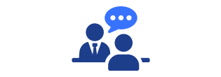
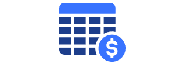
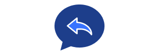
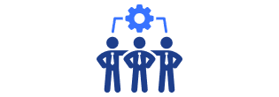
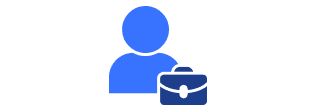

사고 경위, 근로형태, 작업환경, 근무기록, 의학소견 등을 종합 검토하여
업무와 재해의 관련성을 구체적으로 분석합니다.
산재보상
산업재해보상이란?
산업재해보상이란 근로자가 업무 수행 중 또는 그와 관련하여 부상, 질병, 장해 또는 사망을 입은 경우,
국가가 운여하는 산업재해보상보험을 통해 적절한 치료와 보상을 받을 수 있도록 한 제도입니다.
산업재해로 인정받기 위해서는 업무와 재해 사이의 인과관계가 명확인 입증되어야 하며, 신청·심사·보상까지의 행정절차가 체계적으로 진행되어야 합니다.
주요 인정 유형
① 업무 중 사고
근로계약상 업무 수행 중 발생한 사고
(기계작동, 공구 사용, 추락 등)
②출장 및 외근 중 사고
사업주의 지시에 따라 사업장 밖에서
업무를 수행하다가 발생한 사고
③시설물 결함·관리소홀 사고
사업장이 제공한 시설물의 결함 또는
안전관리 미비로 발생한 사고
④출퇴근 중 사고
자가용·대중교통·도보 등 통상적인 경로로
출퇴근 중 발생한 사고
⑤행사·교육 중 사고
사업주가 주관하거나 참여를 지시한
행사·훈련 중 발생한 사고
⑥업무상 질병
유해물질·소음·분진 등 유해요인 노출, 또는
장시간 근무·정신적 스트레스 등으로 인한 질병
⑦ 뇌심혈관계 질환 및 과로사
과도한 업무량·장시간 노동·야간근무·급격한 스트레스 증가로 인해
발생한 뇌출혈, 심근경색, 돌연사 등의 질환
주요 지원 서비스
01
재해조사 및 업무관련성 입증
02
산업재해 신청서 작성 및 자료 제출
요양·휴업·장해·유족급여 등 신청서와 경위서를 법령 기준에 맞게 작성하고,
필요한 증빙자료를 정리하려 근로복지공단에 제출합니다.
필요한 증빙자료를 정리하려 근로복지공단에 제출합니다.
03
근로복지공단 심사 대응
심사 진행 상황을 모니터링하며, 공단의 보완요청이나 사실조사에 대응하고,
필요 시 추가 자료나 의견서를 제출하여 인과관계를 명확히 입증합니다.
필요 시 추가 자료나 의견서를 제출하여 인과관계를 명확히 입증합니다.
04
업무상질병판정위원회 출석 지원
업무상 질병 사건의 경우 위원회 출석 시 구술 진술을 준비하고,
전문 노무사가 동행하여 의견 진술을 지원합니다.
전문 노무사가 동행하여 의견 진술을 지원합니다.
05
보상급여 확인 및 청구
승인된 급여의 산정내역과 지급액을 검증하고,
휴업급여·장해급여 등 각 급여유형별 청구 절차를 진행합니다.
휴업급여·장해급여 등 각 급여유형별 청구 절차를 진행합니다.
산재보상 절차

01
초기 상담 및 자료 확인
상병, 근로이력, 사고경위, 의학적 진단
등 기본정보 파악
02
재해조사 및 증거수집
사업장 방문, 동료진술 확보,
근무기록·CCTV·의무기록 분석

03
경위서 및 신청서 작성
사실관계와 의학적 근거를
정리하여 서류 준비

04
근로복지공단 접수
산업재해 신청서, 경위서,
진단서 등 제출

05
심사 및 보완 대응
공단 조사·심사 대응 및
필요 시 보완자료 제출

06
위원회 심의 및 결정
업무상질병판정위원회 등
심의 절차 참여 및 의견 진술
07
결과 통지 및 급여 청구
결과 확인 후 요양·휴업·장해·
유족급여 등 청구 진행
08
이의신청·재심사 대응(불승인 시)
불승인 결정에 대한 재심사청구
또는 행정소송 연계